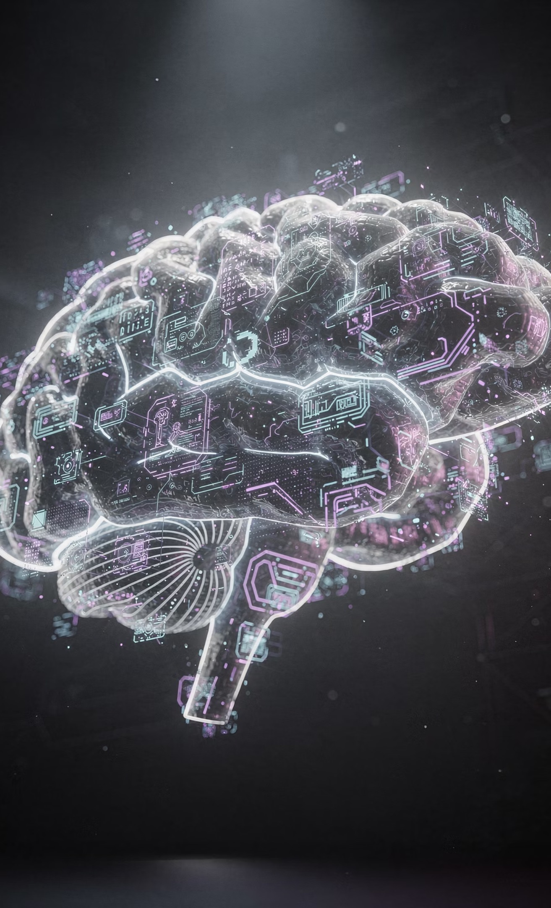
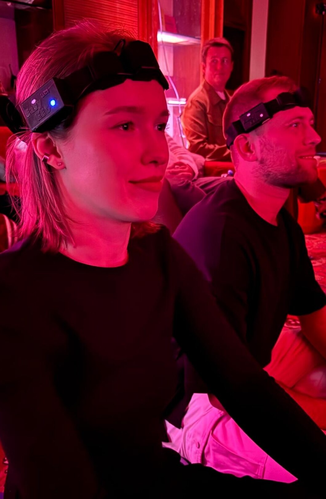

Субъективность
Самоотчёт важен, но зависит от языка, памяти и интерпретации человека.
03 / технология
Психофитнес и внутренняя навигация через наблюдение динамики состояния.
Как это работает
Зачем это нужно
Обычно внутреннее состояние либо описывают словами, либо исследуют в лаборатории. Динамическая нейродетекция создаёт промежуточный формат: персональный сигнал, контекст запроса и быстрая обратная связь во время практики.
Самоотчёт важен, но зависит от языка, памяти и интерпретации человека.
Сложная диагностика требует оборудования, специалистов и подготовленной среды.
Изменение состояния трудно увидеть прямо в моменте практики.

Метод
Нейроментальный сёрфинг — управляемое исследование состояния. Нейродетектор фиксирует динамику ритмов мозга, а диалог и обратная связь помогают связать её с конкретным запросом.
Технология не подменяет внутреннюю работу — она показывает динамику и помогает выбрать следующий шаг.
Единый контур
От снятия сигнала до интеграции результата — всё строится вокруг персональной динамики пользователя.
Портативное устройство для снятия данных.
Обработка и визуализация нейроритмов.
Адаптивная обратная связь во время сессии.
Сопоставление с накопленными паттернами.
Интеграция с внешними системами.
Протокол сессии
Запрос, настройка и исходное состояние.
Видео- и аудиостимулы, фиксация реакции.
Диалог и адаптация обратной связи.
Фиксация нового понимания.
Практический следующий шаг.

Контекст важнее цифры
Показатели становятся полезными только в связке с личным запросом, ощущениями и диалогом. Поэтому сессия строится как внимательное исследование, а не как автоматический вердикт.
Сигнал помогает заметить динамику. Решение остаётся за человеком.Рабочая зона
Метод рассматривается как инструмент для исследовательских, образовательных и развивающих задач.
Этические границы
Динамическая нейродетекция не заменяет диагностику, лечение, кризисную или экстренную помощь. Медицинские решения требуют отдельного клинического контура.
Автор метода